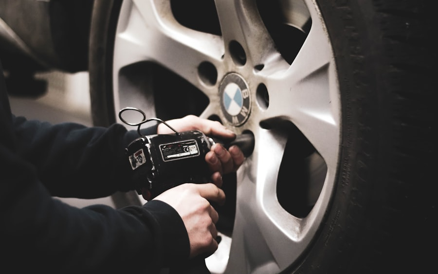
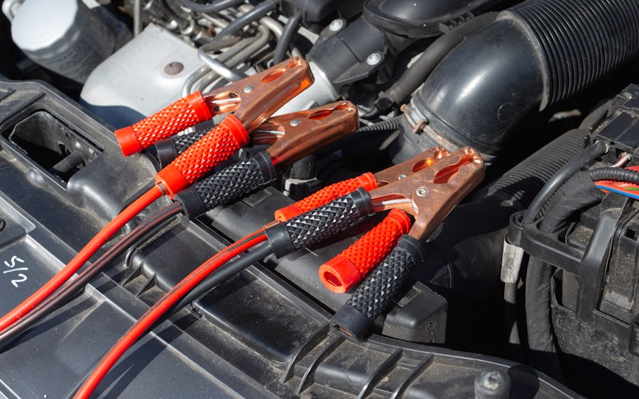
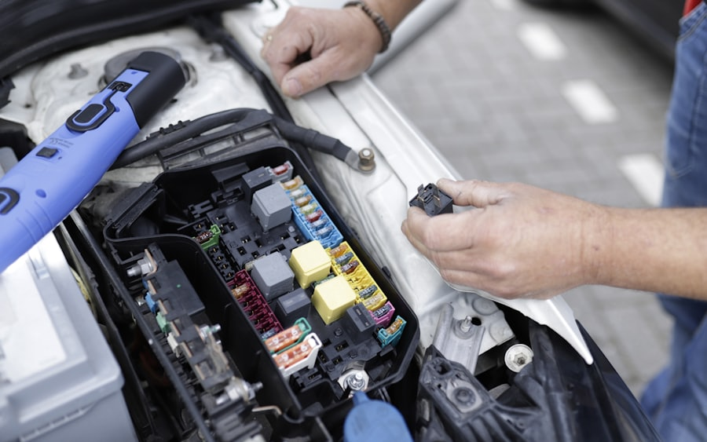

สินค้าและบริการ
ยาง แบตเตอรี่ น้ำมันเครื่อง ผ้าเบรก โช้คอัพ และบริการซ่อมบำรุงครบวงจร
ดูสินค้าและบริการทั้งหมดค้นหาสินค้า บริการ และสาขาที่เหมาะกับรถของคุณ พร้อมจองบริการออนไลน์ได้ง่ายในที่เดียว
ยาง แบตเตอรี่ น้ำมันเครื่อง ผ้าเบรก โช้คอัพ และบริการซ่อมบำรุงครบวงจร
ดูสินค้าและบริการทั้งหมดค้นหาสาขา AUTOBACS พร้อมเวลาทำการ บริการที่เปิดรับ และคิวว่างแบบเรียลไทม์
ค้นหาสาขาดูแลรถประจำองค์กรและฟลีต ด้วยราคาพิเศษ เครดิตเทอม และรายงานการซ่อมบำรุง
ดูบริการสำหรับลูกค้าธุรกิจสะสมแต้ม รับส่วนลดสมาชิก และสิทธิพิเศษเฉพาะผู้ถือบัตรที่สาขาทั่วประเทศ
ดูสิทธิของฉันดีลประจำเดือน ส่วนลดสมาชิก และแพ็กเกจบริการที่คุ้มที่สุด
สั่งซื้อออนไลน์ จัดส่งทั่วประเทศ หรือรับที่สาขาใกล้คุณ
ช้อปสินค้าแล้วเลือกเข้ารับบริการที่สาขา AUTOBACS หรือเลือกจัดส่งถึงบ้าน
อัปเดตกิจกรรม โปรโมชั่น และข่าวสารจาก AUTOBACS
ความรู้จากช่างมืออาชีพ ที่ช่วยให้รถของคุณอยู่กับคุณได้นานขึ้น อ่านจบแล้วลงมือทำเองได้ทันที

เคล็ดลับดูแลรถลมยางที่เหมาะสมช่วยประหยัดน้ำมันและยืดอายุยางได้จริง มาดูวิธีเช็คที่ถูกต้องและรอบที่ควรทำ
อ่านต่อ
แบตเตอรี่สตาร์ทติดยาก ไฟหน้าหรี่ลง หรือแบตบวม คือสัญญาณที่ไม่ควรปล่อยผ่านก่อนจะจอดกลางทาง
อ่านต่อ
ก่อนเดินทางยาง เบรก แบตเตอรี่ ของเหลว และไฟส่องสว่าง ไล่ทีละจุดก่อนออกเดินทางให้อุ่นใจตลอดทาง
อ่านต่อAUTOBACS คัดสรรสินค้าจากแบรนด์ชั้นนำระดับโลก เพื่อรถของคุณ